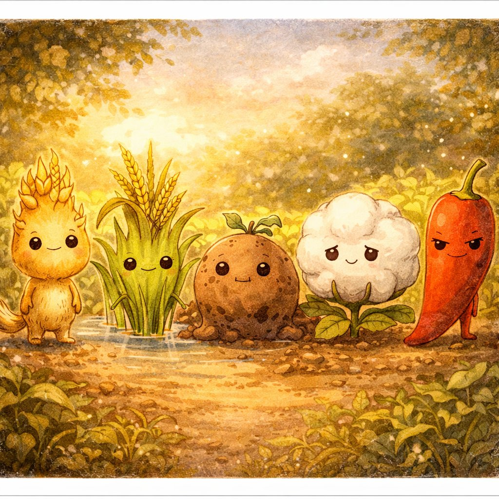
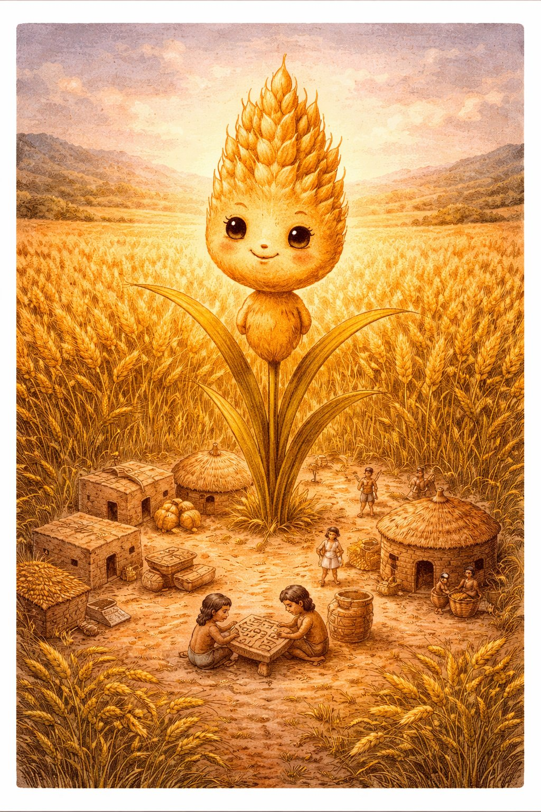
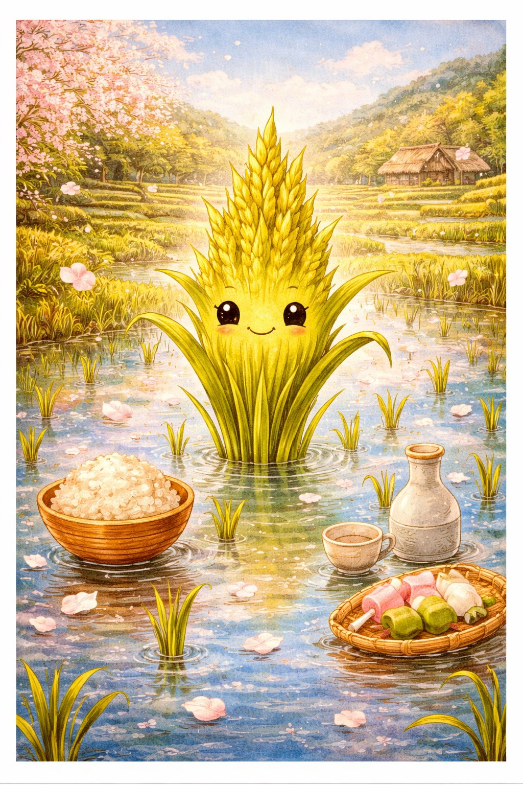
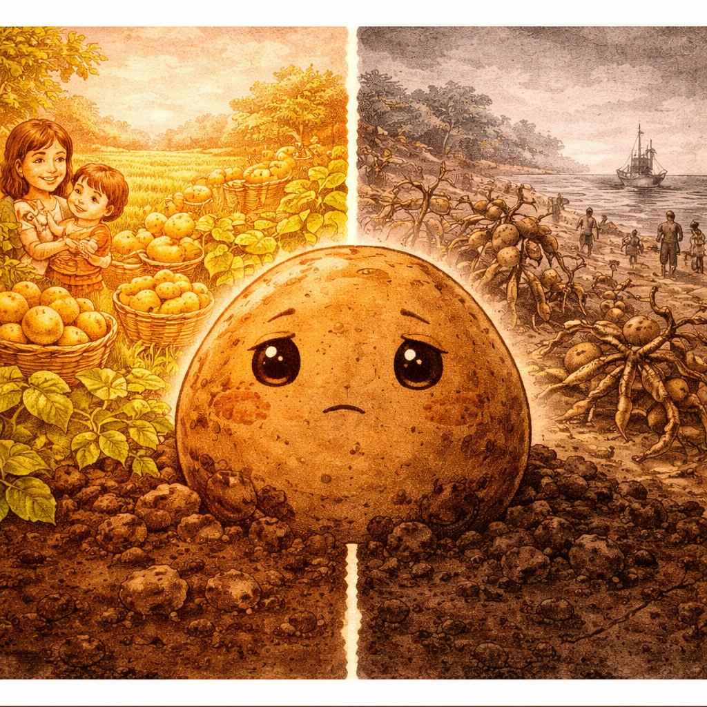
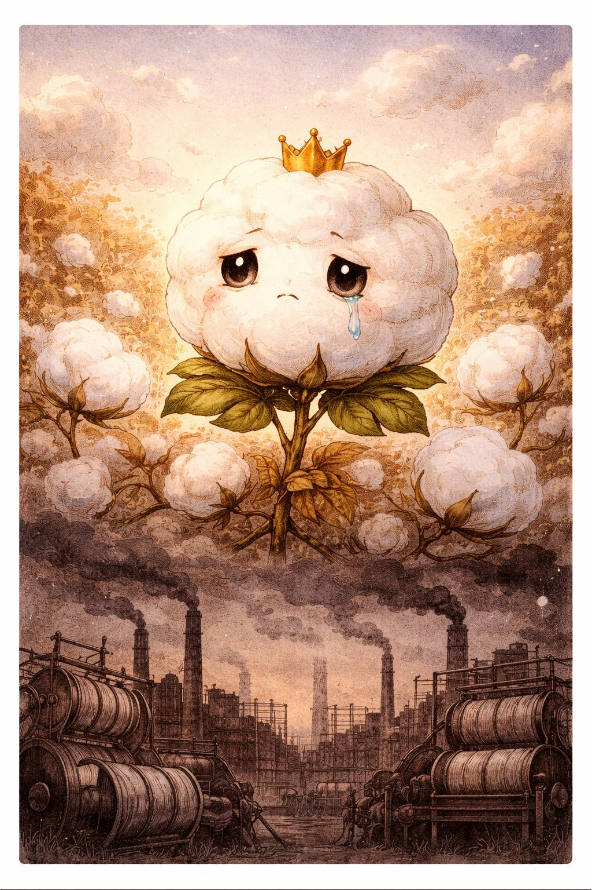
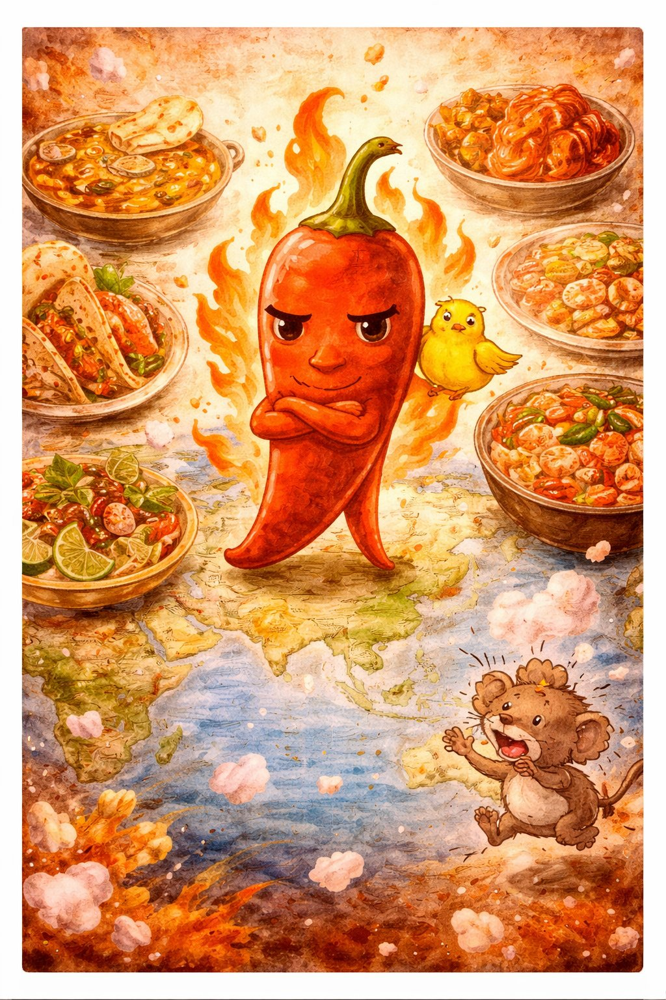

くさきは うごけない。にげられない。さけべない。
でも、にんげんの 歴史を いちばん おおきく かえたのは、植物だ。
にんげんが 植物を えらんで うえた。
でも、ほんとうは 植物が にんげんを えらんだのかもしれない。
「このサルに 世話させれば、せかいじゅうに ひろがれる」と。
これは、根を はった まま 地球を 征服した
くさきたちの おはなし。

ムギちゃんは コムギ。
約1万年まえ、にんげんは 野生の ムギを あつめて うえた。
これが 農業革命 — 人類史上 最大の ターニングポイント。
狩りから 農耕へ。移動から 定住へ。
余った 食料を たくわえ、人口が ふえ、都市が うまれた。
文字も、法律も、国家も — ぜんぶ「食料が あまった」から はじまった。
ムギちゃんが いなければ、文明は なかった。
ムギちゃん × サッちゃん（酵母）= パン。
第1巻の 親友と 第4巻の 親友が 出会うことで、人類の 主食が うまれた。
シリーズを またいだ 最古の コラボレーション。

イネさんは イネ（米）。
コムギが 西の 文明を つくったように、イネは 東の 文明を つくった。
中国、日本、東南アジア — 世界人口の 約半分が 米を 主食にしている。
イネのすごいところは 水田。
水を はった 田んぼは、雑草を おさえ、養分を 循環させ、
同じ 場所で 何千年も つづけて 作れる。
ムギは 土を やせさせるが、イネは 土を まもる。
日本の 文化は 米の うえに たっている。
「ごはん」= 食事そのもの。「米」の 漢字は「八十八」の 手間。
お正月の 鏡餅、秋の 新米、お祭りの おにぎり。
日本語で「文化」を 語ることは、米を 語ること。

ドクニンは ジャガイモ。
南米アンデスの 高地で うまれ、スペイン人が ヨーロッパに もちかえった。
やせた 土地でも そだち、栄養も ゆたか。
ヨーロッパの 貧困層を すくった 奇跡の いも。
でも 1845年、アイルランドで 疫病菌がジャガイモを全滅させた。
ジャガイモだけに たよっていた アイルランドは 壊滅。
約100万人が 餓死し、100万人以上が アメリカに わたった。
ケネディ大統領の 先祖も、この ときの 移民だ。
「ひとつだけに たよるな」。
これは 食料だけの 話じゃない。エネルギーも、経済も、技術も。
多様性は 保険。ドクニンの悲劇は いまも 人類への けいこくだ。

ワタ姫は ワタ（綿花）。
ふわふわの 綿毛から つくる 木綿（もめん）は、
いま きみが きている 服の おおくに つかわれている。
でも ワタの 歴史は、人類の いちばん くらい 歴史と むすびついている。
アメリカ南部の 綿花農園は 奴隷労働で ささえられた。
イギリスの 産業革命は 綿織物工場から はじまった。
近代資本主義は、ワタの うえに たっている。
やすくて べんりな ものの うしろには、だれかの くるしみが あるかもしれない。
ファストファッション、児童労働、環境破壊 ——
「なにを きるか」は「どう いきるか」。
ワタ姫の 白い わたは、いまも 問いかけている。

トウガラ先輩は トウガラシ。
あの 辛さの 正体は カプサイシン — これは 味覚じゃなく 痛覚。
つまり にんげんは 「痛み」を たべて 「おいしい」と いっている。
生物学的に、これは ほぼ バグ。
トウガラシが 辛いのは、哺乳類に たべられない ため。
鳥は カプサイシンを かんじない。だから 種を 遠くまで はこんでくれる。
哺乳類は 辛くて たべない……はずだった。
でも にんげんは たべた。しかも もっと 辛いのを つくった。
有力な 説は「良性マゾヒズム」。
痛みを 感じた脳が「やばい！」と エンドルフィン（快感物質）を だす。
ジェットコースターや ホラー映画と おなじ しくみ。
「安全な 危険」を たのしむのは、にんげんだけ。
トウガラ先輩は、にんげんの いちばん ふしぎな 本能を てらしだす。
ムギちゃんに おそわったこと — 「たねを まくと、もう もどれない」。
イネさんに おそわったこと — 「ながく つづく しくみを つくる」。
ドクニンに おそわったこと — 「ひとつに たよると、もろく なる」。
ワタ姫に おそわったこと — 「べんりの うしろに、だれかが いる」。
トウガラ先輩に おそわったこと — 「にんげんは、へんな いきもの」。
① 共進化 — にんげんが 植物を えらんだのか、植物が にんげんを えらんだのか。たがいに つくりかえてきた。
② 多様性 — ひとつに たよると ほろびる。いろんな 種を のこすことが いのちの 保険。
③ 責任 — 土を つかい、水を つかい、命を つかう。もらうなら、かえす しくみを。
きんたち、むしたち、けものたち、くさきたち。
めに みえない ちいさなものから、
根を はった おおきなものまで。
にんげんは、ひとりで ここまで きたわけじゃない。
みんなと いっしょに、ここまで きた。